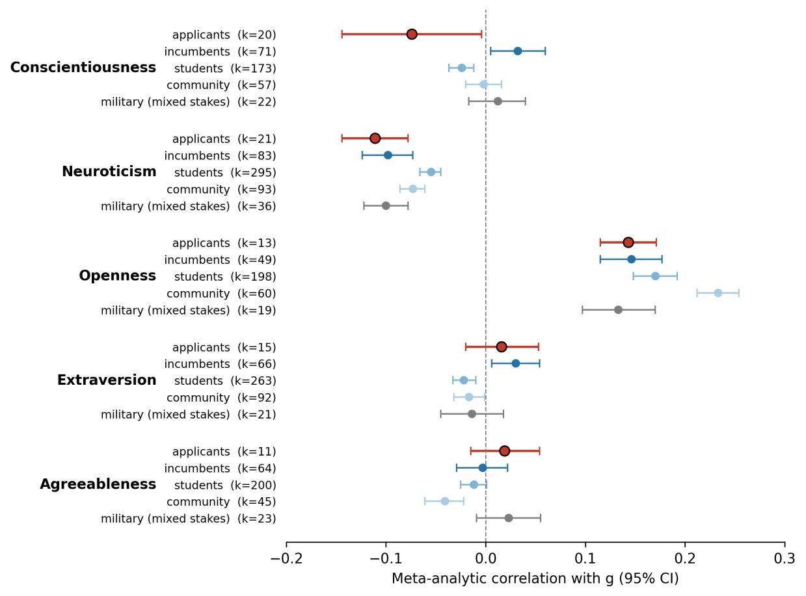
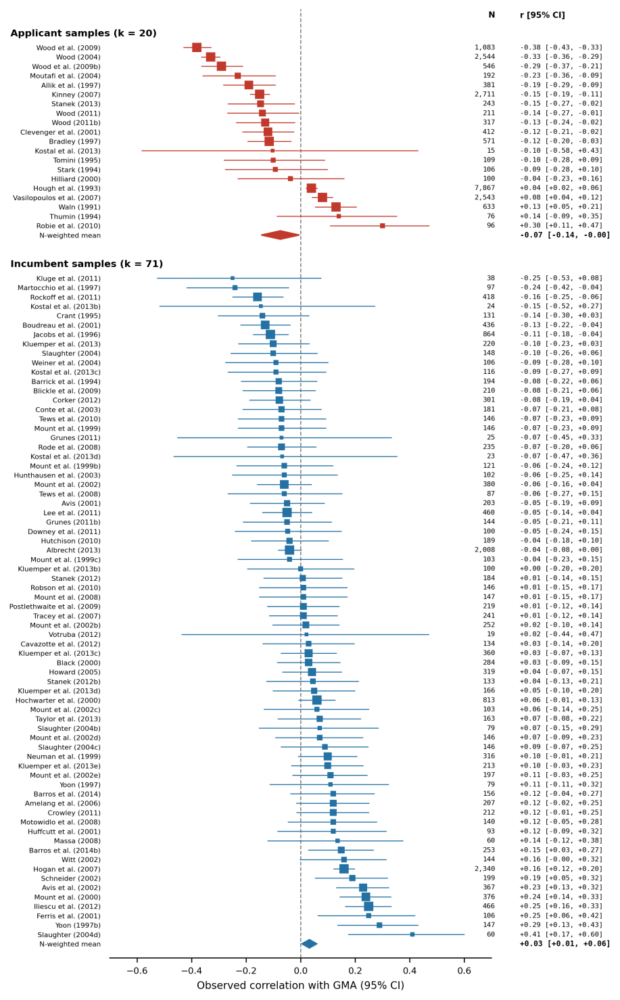
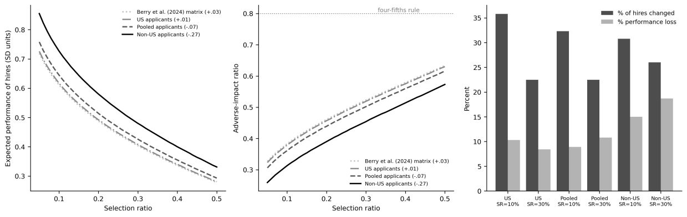
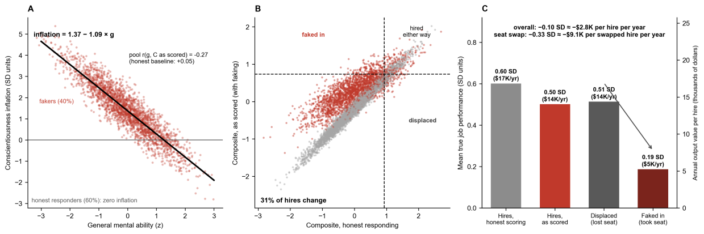

← Publication page · mjmonnot.github.io
Applicant faking on personality tests · Research companion
In simulations with four in ten applicants faking, 22% to 36% of hiring decisions changed and average performance of those hired fell 8% to 19%.
The simulations are fitted to applicant data. In a public database of studies run between 1925 and 2014, job applicants showed a slightly negative link between ability and self-rated conscientiousness, while employees tested for research showed a slightly positive one. The reversal was concentrated in applicant studies outside the U.S. Ability scores are difficult to inflate, so a shift in that link under real stakes is one measurable sign of applicants distorting their self-ratings. No new data were collected from people.
Three findings
- In computer simulations fitted to applicant data, with 40% of applicants faking, 22% to 36% of hiring decisions changed and the average performance of those hired fell 8% to 19%.
- In 9 of the 12 simulated conditions reported, the ratio used in bias audits moved by 0.03 or less. In a second simulation, applicants hired only because of faking were 0.16 to 0.45 standard deviations lower in honesty-humility than the applicants they displaced (0.29 to 0.70 when integrity is taken from overt integrity tests).
- Among applicants in this database, higher ability was associated with slightly lower self-rated conscientiousness, while among employees tested for research the link was slightly positive. The reversal was concentrated in applicant studies outside the U.S. In U.S. studies the difference was near zero (−.01, 95% CI [−.07, .06]).
At a glance
What this means in practice
The decision
Employers combine ability tests with personality questionnaires and rely on published correlations between the two to design composites and project adverse impact. The paper asks whether those correlations hold when applicants have a job at stake, and what applicant faking does to hiring.
In the simulations, faking changed many hiring decisions while the adverse-impact ratio moved by 0.03 or less in 9 of the 12 simulated conditions, and a passed bias audit does not show whether applicants faked. Use an ability and conscientiousness correlation that matches the hiring setting. In this database, the applicant value differed from the research value, and the difference was concentrated in studies outside the U.S. In the Study 1 non-U.S. condition the ratio rose from 0.37 to 0.52 at a .10 selection ratio. The paper also states that stakes were not randomly assigned, so the database results describe differences between settings and do not establish cause.
What was found
- The conscientiousness link with ability was −.07 in applicant samples and .03 in employee samples tested for research. For the other four broad traits, applicant minus employee differences were small and not significant (all |Δ| ≤ .02, p ≥ .29).
- Outside the U.S., the applicant value was −.27; in U.S. studies it was .01.
- In the simulations, simulated applicants who gained a seat through faking performed 0.33 SD worse than those they displaced, in the condition shown in Figure 4.
What to watch, as named in the paper
- Setting-matched values. The paper recommends about +.01 for U.S. high-stakes selection, −.27 for the non-U.S. settings in this database, and the employee value (+.03) for research testing.
- Who gets hired. In Study 2, faked-in hires were lower in honesty-humility while the adverse-impact ratio moved by 0.03 or less (Table 6), so an audit built on selection-rate ratios would not show this change.
- Countermeasures. The paper names verification warnings and forced-choice formats. It also recommends measuring integrity directly.
What would sharpen the answer
- Primary studies that cross personality inventories with regions, so instrument and region can be told apart.
- Within-person studies of real applicants that measure integrity directly.
- A combined analysis of this database with the large operational applicant datasets it does not contain.
The first card follows the paper’s Results sections. The second card follows its Practical Implications section. In the third card, measuring integrity directly is from p. 32 and the combined analysis is from p. 36; the remaining item follows its Limitations and Future Directions section. To discuss an assessment design: matt@vocentive.com.
Try it with your own hiring numbers
Pick a setting, the share of applicants who fake, how selective the hire is, and what the job pays. Every output is read from precomputed runs of the paper’s simulation model, with 400,000 simulated applicants per setting. These are simulation outputs, not forecasts for any one organization.
The paper’s main simulations use 40%. Published estimates run from about 20% to 50%: within-person studies of applicants give 30% to 50%, and a synthesis of the evidence gives about 30%, give or take 10 points. At 20% the model needs more inflation per faker than response scales allow, so the paper treats that case as an upper bound and it is left out here.
Dollar values are illustrative. They use the convention, as the paper does, that one standard deviation of job performance is worth 40% of salary (Schmidt & Hunter, 1983). At the paper’s own settings (40% faking, 1 in 10 or 3 in 10 hired) the calculator is within 0.3 percentage points of Table 4 for hires changed, within 1.6 points for performance loss and within 0.04 for the adverse-impact ratio; the paper’s table uses pools of 200,000. For the swapped-hire gap the paper reports (outside the U.S., 1 in 10 hired: 0.33 SD), the calculator shows 0.30 SD.
For writers and editors
In simulations fitted to applicant data, with 40% of applicants faking on a personality questionnaire, 22% to 36% of hiring decisions changed and the average performance of those hired fell 8% to 19%.
- Paper
- “Compensatory Faking and the Relationship Between Cognitive Ability and Personality in Personnel Selection: Meta-Analytic Evidence and Trait-Driven Simulations,” by Matthew J. Monnot (Vocentive).
- Kind of study
- Two studies. Study 1 is a meta-analysis of correlations from a public database, plus a Monte Carlo simulation of hiring consequences. Study 2 is a further computer simulation fitted to those results. Neither study collected data from people, and no review board approval was required.
- Status
- Preprint posted on SSRN (2026). Not peer reviewed.
- Data
- The Personality Traits and Cognitive Abilities Relations Database of Stanek and Ones (2023), doi.org/10.13020/7YS8-ET75, used under a CC BY-NC-ND 3.0 US license and not redistributed. The database authors were not involved in this study. The study was not preregistered; the paper states that its first two research questions were specified before the moderator and simulation analyses were run.
- What was studied
- 2,158 independent sample and trait correlations between a general ability score and one of the five broad personality traits. Applicant samples numbered 11 to 21 per trait (13,137 to 22,775 people). The focal comparison was with employees tested for research.
- AI use
- The preprint carries no statement on the use of AI tools. It states that the author received no external funding and declares no conflicts of interest.
The study supports
- “Among job applicants in this database, higher ability was associated with slightly lower self-rated conscientiousness.”Mean correlation −.07, 95% CI [−.14, −.00], in 20 applicant samples (20,757 people), against .03 [.01, .06] in 71 employee samples tested for research (18,242 people).
- “The reversal was concentrated in applicant studies outside the U.S.”Outside the U.S., applicant minus employee difference −.33, 95% CI [−.42, −.24]; in U.S. studies −.01, 95% CI [−.07, .06]. One UK-developed inventory family supplied 78% of the non-U.S. applicant sample.
- “In simulations fitted to these results, faking by 40% of applicants changed 22% to 36% of top-down hiring decisions.”Mean performance of those hired fell 8.4% to 18.7% from honest responding in that simulated pool (Table 4).
It does not support
- “Higher stakes cause lower-ability applicants to fake.”Stakes were not randomly assigned. The paper states that the database results identify differences between settings in correlations, and that its mechanism language reflects model assumptions.
- “The reversal holds for high-stakes testing everywhere.”With six large operational applicant datasets added, the applicant estimate moved from −.07 to +.06, and the U.S. estimate from +.01 to +.07. The paper ties the negative value to UK and Australian or New Zealand occupational-inventory settings.
- “Faking costs an employer $9,100 per hire.”That dollar figure is illustrative. It applies per swapped hire per year in one simulated condition, using a convention that the dollar spread of performance equals 40% of a $70,000 salary.
- “Targeted inflation is proven to be how applicants fake.”The paper states that its comparison shows targeted inflation is sufficient and trait-general inflation is ruled out. It adds that this does not make targeted inflation uniquely correct.
Monnot, M. J. (2026). Compensatory faking and the relationship between cognitive ability and personality in personnel selection: Meta-analytic evidence and trait-driven simulations [Preprint]. SSRN. https://doi.org/10.2139/ssrn.7611561
Questions, or a quote: Matthew J. Monnot, matt@vocentive.com.
1 · Of the five broad traits, conscientiousness was where the applicant link reversed
For each broad personality trait, the paper pooled the correlation between that trait and a general ability score, separately for job applicants and for employees tested for research. A correlation near zero means the two scores were unrelated; a negative one means higher ability went with lower self-ratings. Pick a trait.
The robustness checks reported here kept the applicant conscientiousness result negative, though not each one was significant. A random-effects model gave −.10 (95% CI [−.19, −.02]) for applicants and +.03 ([−.01, .06]) for employees. Dropping any one applicant sample left the applicant mean between −.14 and −.04. A test for small-study bias was not significant (p = .41). A meta-regression adjusting for three study-level covariates in 59 samples gave a negative coefficient that was not significant (−.16, p = .07). Compared with all research samples pooled, including students and community samples, the conscientiousness difference was −.07 and not significant (p = .063). Applicant settings varied widely: the 80% credibility interval for conscientiousness ran from −.28 to +.13.


2 · The applicant reversal was concentrated outside the U.S.
The paper then split the conscientiousness comparison by region. Of the study features it could code, only country was a significant moderator. Pick a region.
The non-U.S. applicant samples came mostly from UK settings and from Australian and New Zealand settings, using British occupational inventories. Region was also tied to instrument family and national selection practice in these data, so the paper does not attribute the difference to any one of them. Within applicant samples, published and unpublished sources gave −.09 and −.07 (p = .76), and studies through 2005 and after gave −.05 and −.11 (p = .43). The paper also appended six large operational applicant datasets. One of the six, a French applicant sample of roughly 20,000, is in the database but is classified as not measuring general mental ability; the remaining five do not appear in the database. With them, the applicant estimate moved from −.07 to +.06 and the U.S. estimate from +.01 to +.07.
3 · In the Study 1 simulation, faking changed many hiring decisions
The simulation built pools of 200,000 applicants and let 40% of them fake. How much each faker inflated was fitted so that the pool matched two empirical targets: the applicant rise in conscientiousness scores, a published estimate, and this study’s applicant correlation for the region. Applicants were hired top down on an equal-weight composite of ability and conscientiousness, and the outcomes were compared with honest responding in that pool. Pick a condition.
Across: the share of applicants hired. Up: the share of hiring decisions that change. Each line is one share of applicants faking.


4 · In Study 2, faked-in hires were lower in honesty-humility
Study 2 let traits decide who fakes, using published correlations between traits and faking. The main faking-input set came from real applicants; Study 2 also used laboratory anchor sets. It compared two accounts of what fakers inflate: only the job-relevant and confidence-toned scales, or every scale in proportion to how strongly it tracks social desirability. Every-scale inflation fit the database results worse in each of the three regional conditions. The panel shows the primary specification. Pick a condition.
Fit was measured as a weighted distance between simulated and empirical values, where lower is better. Every-scale inflation scored 13.8 to 15.0 (U.S.), 25.5 to 27.4 (all applicant samples) and 67.7 to 73.2 (outside the U.S.), against 3.8 to 8.2 for job-relevant inflation. Under random faking in those pools, faked-in hires showed no honesty-humility deficit: their mean ranged from 0.00 to +0.28 SD (HEXACO). The paper adds a limit. Inflation that never lowers a score could push the applicant correlation no lower than about −.26, so the non-U.S. value of −.27 must partly reflect who applies.
5 · Choosing a correlation for selection models
Composite validity and adverse-impact projections take the ability and conscientiousness correlation as an input, so the value chosen changes the answer.
The paper recommends a correlation matched to the setting being modeled: about +.01 for U.S. high-stakes selection and +.03 for research testing.
For the non-U.S. settings in this database, which are dominated by UK and Australian or New Zealand occupational inventories, it gives −.27. A single pooled applicant value would describe neither region well.
How to read this. These are observed mean correlations, the inputs used in the paper’s selection models. In the closed-form model at a .10 selection ratio, moving from +.03 to −.27 raised expected hire performance from 0.61 to 0.73 SD and lowered the adverse-impact ratio from 0.38 to 0.31. The simulation adds that the faking behind a negative value also lowers how well conscientiousness scores predict performance, so the realized hire performance fell. The database ends in 2014, before widespread unproctored internet testing.
6 · What the study found, in order
- Direction (Research Question 1). Conscientiousness and ability: −.07 in 20 applicant samples, .03 in 71 employee samples; difference −.11, 95% CI [−.18, −.03], p = .005. The paper reads this as support for compensatory faking over faking as a skill.
- Trait specificity (Research Question 2). Applicant minus employee differences for the other four traits were small and not significant (all |Δ| ≤ .02, p ≥ .29); for openness, Δ = .00, 95% CI [−.04, .04].
- Narrower traits (Research Question 3, exploratory). Ambition shifted negatively (Δ = −.16, 95% CI [−.27, −.05]). Self-esteem and trust shifted positively (both Δ = +.17, p < .001). Nine narrower facets and factors showed no significant shift (all |Δ| ≤ .05). These rest on 5 to 9 applicant samples each.
- Moderators (Research Question 4, exploratory). Country was the one significant moderator: Δ = −.33 outside the U.S. and −.01 in U.S. studies.
- Study 1 simulation. At 40% faking, 22.5% to 35.8% of top-down hires changed and hire performance fell 8.4% to 18.7%. Outside the U.S., the adverse-impact ratio rose from 0.37 to 0.52 at a .10 selection ratio; in the U.S. condition it moved from 0.40 to 0.39.
- Study 2 simulation. Every-scale inflation fit worse than job-relevant inflation in each of the three regional conditions. Faked-in hires averaged 0.16 to 0.45 SD lower honesty-humility than the applicants they displaced under the linear inflation form (0.29 to 0.70 SD with overt integrity-test correlations). Under the ceiling form the gaps were 0.33 to 0.49 SD (HEXACO) and 0.52 to 0.75 SD (overt). Adverse-impact ratios moved by 0.03 or less in Table 6.
- A failed prediction. The fitted model implied a negative applicant shift for emotional stability in the pooled and non-U.S. conditions, which fell outside the interval Study 1 observed. The paper reports this as a boundary on the model.
For specialists
The study design and the main reported estimates in one place. Sources are the preprint’s Method and Results sections and its Tables 1 to 6 and Figures 1 to 4.
| Database | Stanek and Ones (2023c) Personality Traits and Cognitive Abilities Relations Database: 60,690 correlations from primary studies, 1925 to 2014, more than 50 countries. Included: cognitive construct g (CHC mapping) and a global Big Five factor, 3,618 correlations. Excluded 289 correlations (148 sample × trait effects) with unclassifiable sample type. Dependent correlations composited: 2,158 independent sample × trait correlations. |
|---|---|
| Stakes coding | High stakes: applicant samples (26 designations, 117 rows, all verified, none reclassified; one competitive admission sample). Low stakes: incumbents (the focal comparison) plus student and community samples. Military kept separate for sensitivity. |
| Method | Bare-bones psychometric meta-analysis, sample-size weighted (Schmidt & Hunter, 2015); SDres and 80% credibility intervals; subgroup z contrasts. WLS meta-regression with study-level covariates, robust SEs. Robustness: DerSimonian-Laird random effects; leave-one-out; Egger; PET-PEESE; reliability grid. Corrections at rxx = .80 (personality) and .85 (GMA); no range-restriction correction. Not preregistered; RQ1 and RQ2 specified before moderator and simulation analyses. |
| RQ1 and RQ2 | Table 1. Conscientiousness: applicants −.07 [−.14, −.00], k = 20, N = 20,757; incumbents .03 [.01, .06], k = 71, N = 18,242; Δ = −.11 [−.18, −.03], z = −2.78, p = .005. Neuroticism Δ = −.01 (p = .540); Extraversion −.01 (.540); Openness .00 [−.04, .04] (.881); Agreeableness +.02 (.294). Applicant SDres = .16 for C, 80% CrI [−.28, +.13]. Against pooled low stakes: C Δ = −.07, p = .063. |
| Robustness | Random effects −.10 [−.19, −.02] vs +.03 [−.01, .06]; meta-regression (59 samples) b = −.16, p = .07; unweighted b = −.10, p = .27; leave-one-out −.14 to −.04; Egger p = .41; PET and PEESE −.04 and −.08; corrected values varied by less than .02 over the reliability grid. |
| RQ3 | Table 2, 12 constructs with at least 5 applicant and 5 incumbent samples. Self-Esteem Δ = +.17 [.12, .22]; Trust +.17 [.08, .26]; Ambition −.16 [−.27, −.05], p = .005; remaining nine |Δ| ≤ .05, smallest p = .079 (Sociability). Exploratory. |
| RQ4 | Table 3, Panel A. Non-US: applicants −.27 (k = 10; N = 6,050), incumbents .05 (20; 8,577); Δ = −.33 [−.42, −.24], z = −7.08. US: .01 (10; 14,707) vs .01 (51; 9,664); Δ = −.01 [−.07, .06]; US applicant samples −.15 to +.14. One UK inventory family 78% of non-US applicant N. US Agreeableness Δ = +.07 [.04, .11]. Publication type p = .76; era p = .43. With six external operational datasets appended (Table S8): pooled C −.07 to +.06, US +.01 to +.07, non-US −.27 to +.02. |
| Analytic model | Equal-weight GMA plus C composite, top down. Operational validities .31 and .19 (Sackett et al., 2022); Black-White d 0.79 and −0.07; minority proportion 1/6. Corrected ρ +.01 to −.09: R .362 to .379; composite d 0.507 to 0.534. At SR .10, inputs +.03, +.01, −.07, −.27: hire performance 0.61, 0.62, 0.65, 0.73 SD; AIR 0.38, 0.38, 0.36, 0.31. Subgroup inputs are US-derived. |
| Study 1 simulation | Table 4. n = 200,000 per condition; 40% random fakers; mean inflation and compensatory slope solved to d = 0.45 and the context correlation; noise σ = 0.50 (0.25 to 1.00 in sensitivity). Hires changed 22.5% to 35.8%; loss 8.4% to 18.7%; AIR non-US 0.37 to 0.52 (SR .10), 0.54 to 0.66 (SR .30); pooled 0.39 to 0.44 and 0.53 to 0.56; US 0.40 to 0.39 and 0.53 to 0.52. Loss 12% to 33% at 30% prevalence, 7% to 15% at 50%; 20% prevalence implies 3.0 to 4.8 SD per-faker inflation. Over 25 independent pools, SEs were at most 0.06 points (hires changed), 0.19 points (loss) and 0.003 (AIR). |
| Study 2 model | Six latent traits; logistic faking function of g, C, honesty-humility with slopes solved to anchor point-biserials at 40% prevalence. Anchor sets (Table 5): field (−.19, +.17, −.04); field-conservative (−.19, 0, 0; primary); laboratory (+.14, −.15, +.21); a laboratory variant. Six WLS targets: C shift d = 0.45; ES shift 0.44; A shift 0.16; applicant C-GMA correlation; Self-Esteem shift +.17; SD ratio 0.86. |
| Study 2 results | Targeted distances 3.8 to 8.2 (each includes about 3.5 from the Agreeableness target); desirability-proportional 13.8 to 15.0, 25.5 to 27.4, 67.7 to 73.2. Laboratory set implied 39% to 48% performance loss in the non-US condition. Non-negative inflation floor about −.26. Table 6 (linear form): hires changed 20.0% to 34.9%; loss 7.9% to 17.9%; H gap −0.16 to −0.45 (HEXACO), −0.29 to −0.70 (overt tests); AIR changes at most 0.03. Censored and freed-skill forms: US and pooled losses about 13% to 18%. ES-GMA falsification check failed in pooled (−.101) and non-US (−.279) conditions; observed +.013 [−.029, .055]. |
| Limits | Stakes coded from sample type and not randomly assigned. Applicant k modest (11 to 21 per trait; 5 to 10 per region or compound). Database ends 2014. Region confounded with instrument family and selection practice. No forced-choice instruments. Constant artifact values. Trait-faking anchors rest on two primary studies (n = 128 field; n = 189 laboratory). Targeted inflation leaves the Agreeableness shift at zero by construction, so only its trait-general rival was exposed to falsification on that target. |
| Materials | Python 3.14. The paper states that code and aggregate tables are available from the author until a public repository is posted; the database is not redistributed. No respondent-level data are hosted on this page. |
What this site does and does not show
- No respondent-level data are hosted here. Every estimate and interval in the evidence sections is a published aggregate from the preprint. Nothing is estimated or simulated in the browser.
- The hiring calculator reads precomputed runs of the paper’s simulation model from a data file (grid.json). It covers more settings than the paper tabulates. At the paper’s own settings it differs slightly from Table 4 (by up to 1.6 points for performance loss). The paper’s tables use pools of 200,000 simulated applicants and the calculator uses 400,000.
- No countermeasure is evaluated. The paper names countermeasures but does not test them.
Tools used
Analyses and simulations: Python 3.14, as reported in the preprint.